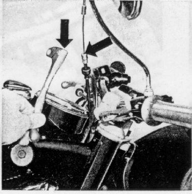
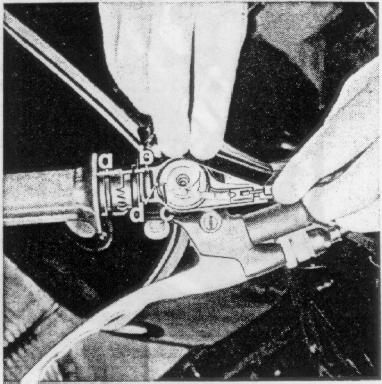

Grease
joints
of the foot brake
(item 5)
and of the clutch lever
(item 1)
figures 53/54
every 3000 miles with grease gun.
Lubricate the
fittings
of the cables for the clutch and the front wheel brake every 3000 miles.
For this purpose, unhook the clutch cable at the clutch lever,
unscrew the brake adjustment screw (wrench size 10) of the front
wheel brake.
Loosen the lock nut of the clutch and brake hand lever pivot bolts,
unscrew the bolt, pull the lever out of the joint, unhook the cables,
let a few drops of oil run into the cable sleeve to lubricate.
Reassemble in reverse order.
Take care not to kink the cables.
Figure 22
22

Adjust the front wheel brake,
see page 24.
Check
throttle twist grip
for easy turning every 3000 miles;
push back water protection cap, unscrew cover if necessary,
pull off handel.
Lubricate the inside of the handle, the rack drive and the pull chain.
See to it that the slot end a in the throttle grip is even
on the operator's side to recress b in the throttle bracket
when reassembling.
Thread the ower cable into the
double nipple and insert it, together with the pull chain and throttle cam,
into the throttle bracket tha marks c and d at the cam
and the bracket face each other.
The full travel of the cables is assured only when these instructions
are followed.
Insert the upper cable into the double nipple,
replace cover and simultaneously pull back the upper cable housing
far enough for the cable end sleeve to be able to snap into its seat
in the recess in the cover.
Screw cover tight, push on water protection cap.
Figure 23
23
